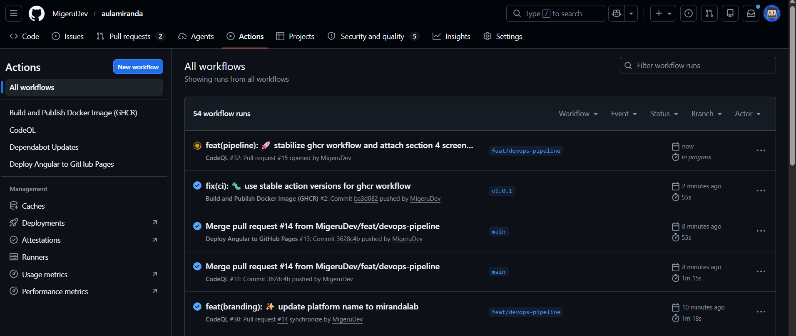
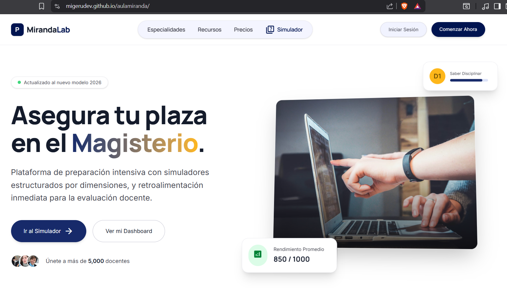

MirandaLab es una plataforma de vanguardia diseñada para transformar la preparación de los docentes ecuatorianos, completamente desplegada, orquestada y asegurada end-to-end como proyecto integrador final del curso de DevOps.
¿Qué evento dispara cada workflow? (push a main, tag, push + PR)
El CI/CD pipeline consta de tres workflows core ejecutados mediante GitHub Actions:
Deploy a GitHub Pages: Se desencadena mediante un push directo a la rama main. Este pipeline realiza el build de producción de la aplicación Angular y expone los artifacts estáticos usando el entorno moderno de Pages.
Docker GHCR: Se acciona al generar un tag de release en Git (ej. v1.0.0). Construye una imagen Docker optimizada y ejecuta un push seguro hacia el GitHub Container Registry.
CodeQL: Nuestro componente de code scanning. Está configurado para reaccionar ante cada push a main, en creación de pull requests, y de forma programada vía cron, ejecutando un análisis de seguridad estático (SAST) sobre el código fuente.

¿Qué workflow publica el sitio automáticamente?
La orquestación del deployment automático es manejada íntegramente por el workflow deploy.yml.
¿Qué carpeta/archivos se despliegan?
Este action empaqueta y transfiere el contenido del directorio dist/app/browser/. Dicha carpeta alberga todos los compilados minificados (HTML, CSS, JS) generados por el framework Angular, los cuales se despliegan directamente de manera serverless en el entorno de GitHub Pages.

¿Qué evento dispara la publicación de la imagen?
El release pipeline hacia GHCR se dispara automáticamente al crear y subir un tag de Git al repositorio que cumpla con un patrón de versionado semántico (ejemplo: v1.0.0).
¿Por qué se generan tres etiquetas a partir de un solo tag?
Utilizamos action metadata para implementar un schema robusto de semantic versioning de manera dinámica. Esto asegura que el tag latest sea siempre un pointer a la iteración estable más reciente, a la par que se generan etiquetas granulares (ej. 1.0 y 1.0.0) para preservar snapshots inmutables, garantizando fallbacks seguros en el ecosistema de producción.
src="./proyecto_final_screenshots/3_ghcr_image.png"
¿Por qué el servicio web en el Docker Compose no mapea todos los puertos internos y qué función cumple?
En el entorno local, el docker-compose.yml orquesta la aplicación exponiendo únicamente el puerto estrictamente necesario (el puerto interno 80 de Nginx hacia el 8080 del host), aislando el contenedor del host para evitar conflictos de puertos y limitar la superficie de ataque local.
¿Cómo sabe nginx qué servir y hacia dónde enrutar?
El contenedor ejecuta Nginx actuando como web server. Posee una configuración nginx.conf que indica explícitamente servir los artifacts estáticos en /usr/share/nginx/html, e incorpora una regla de fallback routing (try_files $uri $uri/ /index.html;) que intercepta todas las rutas no encontradas y las redirige al index.html, un approach indispensable para el client-side routing de nuestra Single Page Application (SPA).
src="./proyecto_final_screenshots/4a_docker_ps.png"
src="./proyecto_final_screenshots/4b_localhost.png"
¿Qué diferencia hay entre lo que detecta Dependabot y lo que detecta CodeQL?
Dependabot proporciona Software Composition Analysis (SCA), inspeccionando constantemente el dependency tree del package.json para aislar librerías de terceros (ej. lodash) afectadas por vulnerabilidades CVE conocidas. Por otro lado, CodeQL provee Static Application Security Testing (SAST), analizando el control flow de nuestro código fuente propio para identificar fallos de arquitectura como posibles inyecciones de código.
¿Cómo corregirías la vulnerabilidad del eval() que CodeQL detectó?
Para mitigar la alerta del eval() generada por CodeQL, la ejecución dinámica de user input debe ser completamente removida. El refactor debe implementar un parser aritmético especializado o procesar los datos dentro de un contexto estrictamente tipado que no ejecute code payloads arbitrarios en runtime, cerrando así el vector de code injection.
src="./proyecto_final_screenshots/5a_dependabot.png"
src="./proyecto_final_screenshots/5b_codeql.png"